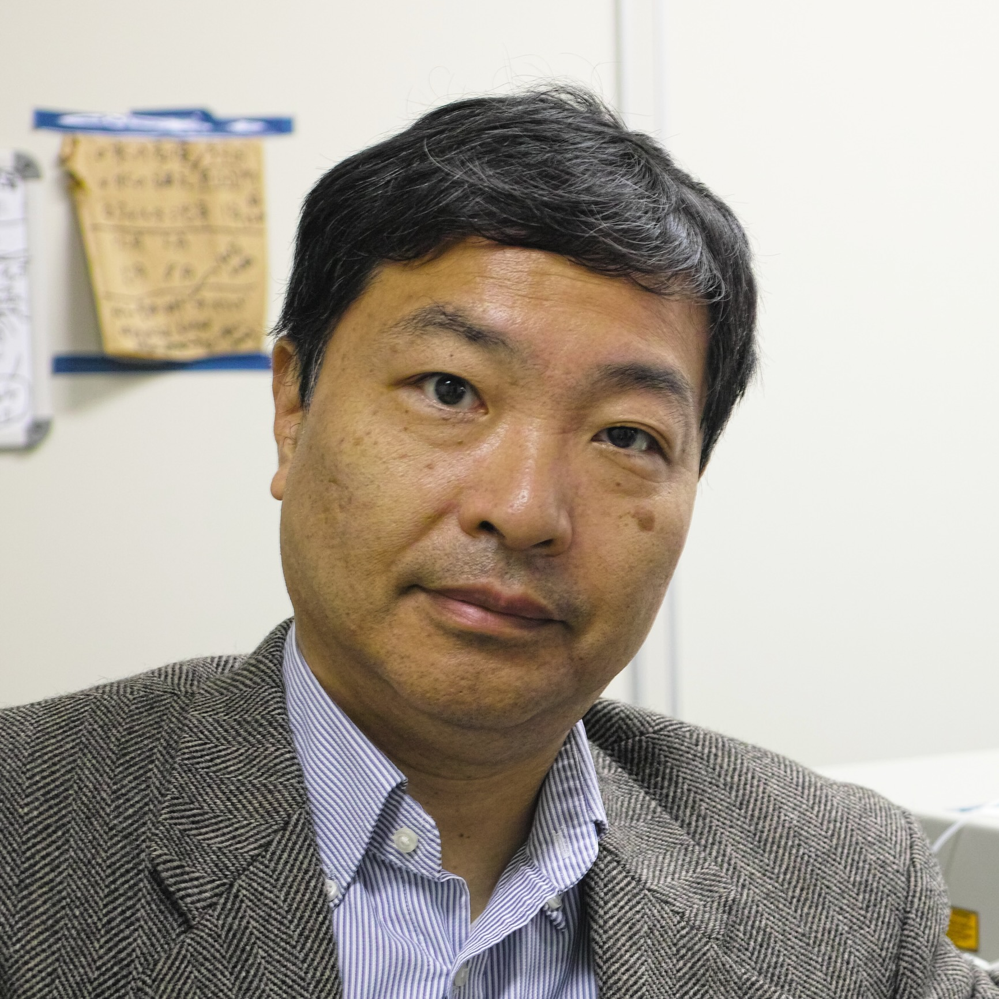
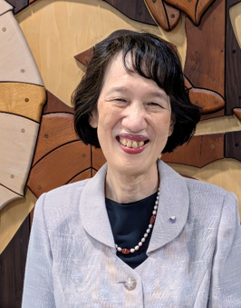
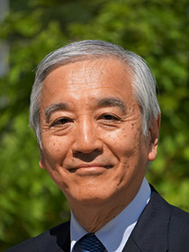
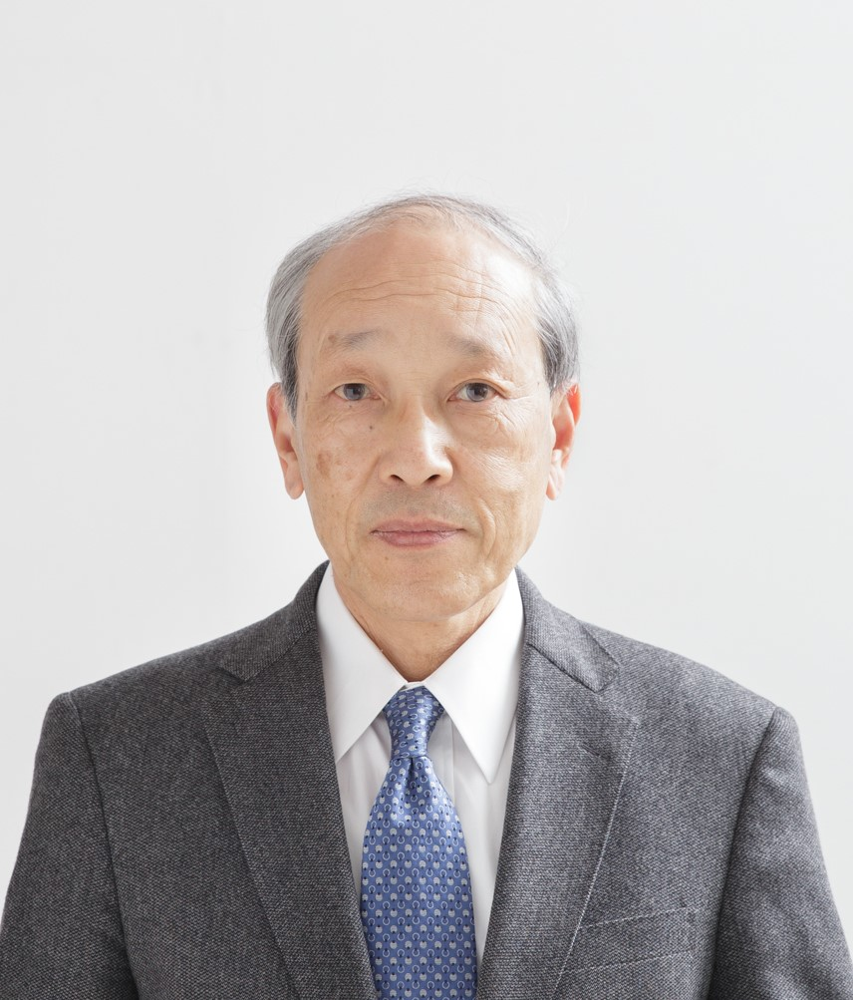
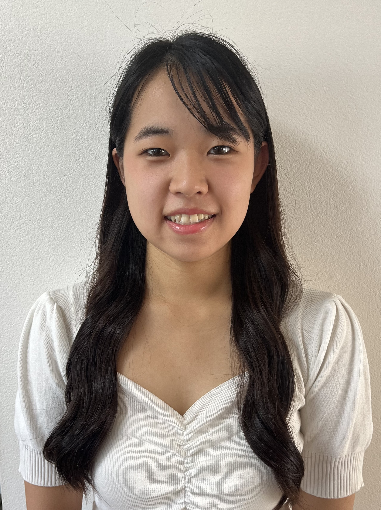

中尾 直之
この度、第21回「紀葉祭」が、こうして盛大に開催されますことを心よりお祝い申し上げます。今年のテーマは「紀州爛漫」です。「天真爛漫」という言葉が示すように、飾らないありのままの魅力や純真な情熱を、ここ和医大から地域へ、そして未来へと発信していきたいという素晴らしい想いが込められています。
今年は特に「和医大生全員が楽しめる大学祭を取り戻す」という目的を打ち出しています。学生一人ひとりが主役となり、和医大ならではの魅力と活気がキャンパス全体に満ちあふれることを期待しています。また、本学の教育・研究・医療活動は、日頃から温かく見守り支えてくださる地域住民の皆様の存在なくして成り立ちません。「地域住民の皆様への深謝」ということで、日頃から温かく見守ってくださる地域の皆様へ、ぜひ感謝の想いを届けてください。そして、これまで先輩方が紡いできた歴史と想いを受け継ぎ、次代へとつなぐ「紀葉祭の文化の継承」もまた、今大会の大切な使命です。時代が変わっても変わらない和医大生の情熱がこの「紀州爛漫」のテーマのもとで鮮やかに放たれることでしょう。
結びに、開催に向けて企画・準備に尽力された実行委員会および関係者の皆様に心より敬意を表したいと思います。この紀葉祭の期間が、参加するすべての人にとって思い出に残るひとときとなることを祈念して、私からの挨拶といたします。

金井 克光
第２１回和歌山県立医科大学紀葉祭が本学紀三井寺キャンパスで開催されること、誠におめでとうございます。
今年の紀葉祭のテーマは「紀州爛漫」です。この「爛漫」は、天真爛漫という四字熟語に由来します。天真爛漫とは「飾り気や作為がなく、生まれつきの純真な姿がそのまま外に表れている様子」を意味し、和歌山のありのままの良さを和医大から発信していく紀葉祭にしたい、そんな思いからこのテーマになったと伺っております。今年の紀葉祭は１年生が中心となって企画・運営を進めています。このような新しい紀葉祭を作り上げることを通して、学生の皆さんが普段の学業では経験できない有益な経験を得ることを大いに期待しつつ、祝辞とさせていただきます。
末筆ながら、開催にあたりましてご支援、ご協力を賜りました皆様に心より御礼申し上げます。

川股 知之
2026年度、第21回紀葉祭を迎えることができたことを、心からうれしく思います。
近年、紀葉祭は少しずつ元気を失い、今年は、開催そのものが危ぶまれた時期もありました。それだけに、こうして第21回紀葉祭を迎えることができた喜びは、ひとしおです。開催に向けて奔走してくれた自治会の皆さん、そして「自分たちの手で紀葉祭をつくろう」と実行委員会に名乗りをあげてくれた皆さんに、心から敬意を表します。
テーマは「紀州爛漫」。このテーマが皆さんの手でどのように表現されるのか、今からとても楽しみです。
今回の第21回紀葉祭は、ある意味で“新しい「紀葉祭」の幕開け”なのかもしれません。これまでの伝統を大切にしながらも、大学祭のあり方を改めて考え、医学・保健看護学・薬学がともに学ぶ医療系総合大学ならではの特色を打ち出してほしいと思います。そして、地域の皆さんとの交流を深める場であると同時に、何よりも、学生の皆さん自身が思い切り楽しめる大学祭にしてください。
仲間と一緒に考え、準備し、笑い、時には苦労しながら一つのものをつくり上げる経験は、きっと大学時代の大切な思い出になります。そして、その思い出が、卒業して大学を離れた後も、皆さんと大学をつなぐ大切な絆になってくれればと思います。さらに、皆さんがつくり上げた新しい紀葉祭を、次の世代へ、そのまた次の世代へと引き継いでいってください。
皆さん自身の手で、新しい紀葉祭の伝統をつくってくれることを期待しています。

水田 真由美
第21回紀葉祭が開催されますこと、大変嬉しく思います。21という数字は3の倍数でもあり、三学部が協力して、無限に広がりを持って発展していける大学祭になることを期待しております。今回のテーマは「紀州爛漫」とのことで、和歌山らしさがあふれた紀葉祭になることでしょう。また、学生の皆さんの若さやご参加されます皆様方の笑顔があふれる大学祭をイメージできる良いテーマであると思います。
学生の皆さんは医学・保健看護学・薬学の学生として、どのような企画をされるのか楽しみにしています。学生が創造性を発揮し、いきいきと活動し、学祭の成功を収めることは、本学の教育理念にもある豊かな人間性を育むことにも繋がります。将来の保健医療福祉を担う学生に有意義な体験となりますことを願っております。
最後に開催にあたり、尽力された実行委員の皆様、関係者の皆様に深く感謝いたします。

太田 茂
今年も第21回和歌山県立医科大学「紀葉祭」が盛大に開催されますことを、心よりお祝い申し上げます。また、日頃から本学の教育・研究ならびに医療活動に温かいご理解と多大なるご支援をいただいております地域の皆様、保護者の皆様に厚く御礼申し上げます。
今年のテーマは「紀州爛漫」です。今年の実行委員長の言葉を借りれば「和歌山のありのままの良さを和歌山県立医科大学から発信していくことを目指した文化祭にしたい，そんな思いからこのテーマにしました。」とのことです。また、このテーマには、和歌山の豊かな自然や歴史が美しく輝くように、学生一人ひとりの個性や情熱がこのキャンパスで満開に咲き誇ってほしいという願いが込められているのではないでしょうか。医学部、保健看護学部、そして薬学部の有志達が一堂に会し、それぞれの専門性を生かしながら手を取り合い、日頃の学業や課外活動の成果をこの紀葉祭のために形にしてきました。医療を志す若者たちが、分野の垣根を越えて一つのものを作り上げた努力の結晶が、このキャンパスに溢れています。
紀葉祭は、学生の皆さんにとって日頃の成果を地域に還元し、来場者の皆様と温かい交流を深める貴重な機会です。ここで得られる多様な人々との繋がりや協調の精神は、将来、医療人として社会に貢献するための大きな糧となるに違いありません。
結びになりますが、紀葉祭のために時間をかけて準備を重ねてきた実行委員の皆さんに心からの敬意を表するとともに、ご来場いただきました皆様にとりまして、価値ある紀葉祭となりますよう祈念いたしまして、私の挨拶といたします。

有田 幹雄
第21回紀葉祭が開催されることとなりました。大学祭は学生が主体となって行う課外活動及び公開行事とされています。お祭りは人々がワクワクして一体感が生まれる素晴らしい場です。大学祭の活動により自分と異なる個性を持った人との出会いを通じて自分の可能性を広げることができます。大学祭は地域に開かれており、地域の皆さんに大学に親しんでいただくための絶好の機会であると思います。魅力ある企画を通して多くの人に集まってもらえるような大学祭になることを期待しています。
今年の大学祭のテーマは “紀州爛漫” とのことです。和歌山県立医科大学は医療人を育成する教育機関です。大学も創立80年を経過して医療系の総合大学として発展してまいりました。皆さんは卒業した後、病を患っている「人間」を診ることになります。学生時代にいろいろな経験をすることで、人間性を養い、社会人としての基礎が確立してまいります。医学部同窓会は卒業生は全員同窓会員であると考え活動しています。皆さんが誇りと思われるような大学になるよう、大学の先生方と協力してまいります。同窓の先生方からの温かいご支援のもと「和歌山県立医科大学」という母校を愛する心を養って頂ければ幸いです。
最後に、和歌山県立医科大学の益々の発展と紀葉祭の成功を祈念し、ご挨拶とさせていただきます。

表 佳代
第21回紀葉祭の開催にあたり、保健看護学部同窓会を代表して心よりお祝い申し上げます。
まずは、長い期間にわたり準備を重ねてこられた実行委員会の皆さま、そして開催にご協力くださった地域の皆さま、大学関係者の皆さまに深く敬意を表し、感謝申し上げます。今年度のテーマである 「紀州爛漫」 には、飾らず、ありのままの魅力を伸びやかに表現するという想いが込められていると伺いました。天真爛漫という言葉が示すように、学生の皆さん一人ひとりが持つ純真さや創造性がそのまま形となり、和歌山の豊かな文化や温かい人のつながりと響き合う紀葉祭になることを大変嬉しく思います。
学びは講義や実習だけでなく、仲間と協働し、地域の方々と交流し、自ら企画を創り上げる経験の中にこそ深まるものです。紀葉祭は、その学びが色鮮やかに花開く特別な場であり、学生の皆さんが培ってきた表現力・創造力・協働力が存分に発揮される機会です。本日の大学祭が、学生の皆さんにとって新しい気づきと自信を育む時間となり、来場された皆さまにとっては和歌山県立医科大学の魅力を再発見していただく場となることを心より願っております。
最後に、この日のために尽力されたすべての皆さまに改めて感謝申し上げるとともに、紀葉祭が実り多く、温かい思い出として皆さまの心に残ることを祈念いたします。

鎌田 徳人
はじめに、第21回「紀葉祭」の開催にあたり、多大なるご支援とご協力を賜りました先生方、地域の皆さま、ならびに関係者各位に心より御礼申し上げます。また、多忙な学業の合間を縫って準備に尽力してくれた実行委員の皆さんにも深く感謝いたします。
今年度の初めは開催自体が危ぶまれるほど不安定な状況が続き、私もどのようにして開催へ導くべきか頭を悩ませておりました。そうした中、1年生が自ら手を挙げて立ち上がってくれました。2年前に私が実行委員長を務めさせていただいたこの紀葉祭が、こうして今年も無事に開催を迎えられたことを大変感慨深く、嬉しく思っております。手探りの状況下で不慣れなことも多く、準備には並々ならぬ苦労があったことと思います。しかし実行委員の皆さんは、これまでの基盤を引き継ぎつつ、各自の個性を存分に発揮して新たな形へと発展させてくれました。今年の大学祭は、運営体制を含めて一新されており、テーマに掲げられた「和歌山の良さ」を飾ることなくお届けできる、魅力あふれる企画へと生まれ変わっています。大学祭は、地域の方々と広く交流できるかけがえのない機会です。本学の紀葉祭が、学生のみならずご来場いただく皆さまにとっても、本学の多彩な魅力に触れていただける実りある場となることを願います。
彼らは紀葉祭を開催するにあたり、現実と理想のギャップなど多くのことを経験し、学び成長しています。自治会長として今年の紀葉祭も最初から見守ることができたことを非常に嬉しく思います。2年前の盛り上がりを今年も見られることを楽しみにしています。
最後になりますが、ご来場いただきました皆さまにおかれましては、新しく生まれ変わった紀葉祭をどうぞ心ゆくまでお楽しみください。

柳根 菜々
皆さんこんにちは、保健看護学部自治会です！
はじめに、今回の学祭の開催にあたり、ご支援・ご協力を賜りました先生方、地域の皆様、その他関係者の皆様に心より御礼申し上げます。また、学祭の開催に向けて準備を重ねてきた実行委員の皆さんをはじめ、関係する学生の皆さんの努力に感謝いたします。
さて、今年度の学祭のテーマは『紀州爛漫』です。「天真爛漫」という言葉には、飾り気や作為がなく、生まれつきの純真な姿がそのまま表れている様子という意味があります。そこに和歌山を表す「紀州」を重ね、和歌山のありのままの魅力を感じ、楽しんでいただける紀葉祭にしたいという思いが込められています。
紀葉祭は、和医大生だけでなく、地域の皆様やご来場いただいたすべての方々が一緒になって楽しむことのできる大切な機会です。普段とは違った雰囲気の中で、さまざまな企画や交流を通して笑顔が生まれ、皆様にとって心に残る一日となれば嬉しく思います。
『紀州爛漫』というテーマのもと、和歌山の魅力を感じながら、学生も地域の皆様も、子どもから大人まで、思いきり楽しめる紀葉祭を目指してまいります。
ご来場いただいた皆様にとって、笑顔と楽しい思い出があふれる一日となりますよう、心よりお祈り申し上げます。
ぜひ『紀州爛漫』を一緒に楽しみましょう！
原野 紗耶加
皆さん、こんにちは！薬学部自治会長の原野紗耶加です。
はじめに、第21回紀葉祭の開催にあたり、長期間にわたって準備を進めてこられた実行委員の皆様をはじめ、ご協力いただいた大学関係者の皆様、そして紀葉祭に関わるすべての方々に、心より感謝申し上げます。
大学祭は、日頃の学業や研究、部活動とは少し違った形で、自分たちの個性や大学の魅力を発信できる特別な機会です。また、普段は異なる学部や学年で過ごしている学生が集まり、交流できることも大学祭ならではの魅力だと感じています。このようなイベントを今年も開催できることを大変嬉しく思います。
今年のテーマである「紀州爛漫」のように、ひとりひとりがそれぞれの場所で輝き、その輝きが集まることで、紀葉祭がより華やかで笑顔あふれるものになればと思います。また、この紀葉祭を通して、新しいつながりが生まれ、本学の学生にとって心に残る時間となれば幸いです。
そして、紀葉祭は学生だけでなく、地域の皆様やご来場いただく方々にとっても、本学や学生の魅力に触れていただける大切な機会です。学生の想像力あふれる企画や活動を通して、和歌山県立医科大学の魅力を少しでも感じていただければと思います。
最後に、第21回紀葉祭が、これまで準備してこられた皆様の思いが実を結ぶ、素晴らしい一日となることを願っています。皆さん、今年の紀葉祭も思い切り楽しみましょう！！